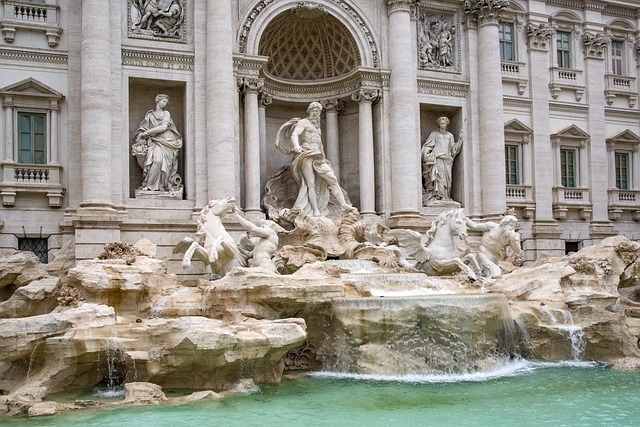
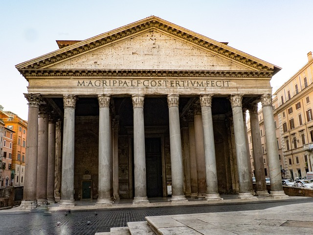
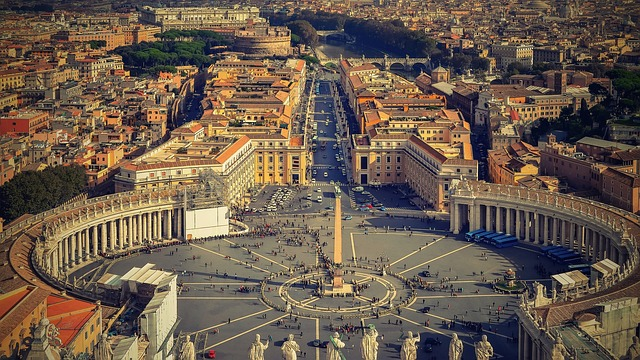

Przewodnik po Rzymie
Poznaj stolicę Włoch
Czytaj więcej
Najchętniej odwiedzane atrakcje w Rzymie
Koloseum
Koloseum (łac. Colosseum, wł. Colosseo), właściwie amfiteatr Flawiuszów (łac. Amphitheatrum Flavium) amfiteatr w Rzymie, wzniesiony w latach 70-72 do 80 n.e. przez Wespazjana i Tytusa cesarzy z dynastii Flawiuszów.
Fontanna Trevi

Fontanna di Trevi ( wł. Fontana di Trevi) najbardziej znana barokowa fontanna w Rzymie, w rione Trevi (R. II). Została zbudowana z inicjatywy Klemensa XII w miejscu istniejącej wcześniej fontanny zaprojektowanej przez Leona Battiste Albertiego z 1435 r.
Panteon

Panteon w Rzymie (łac. Pantheon, z greckiego Πάνθειον, pan – wszystko, theoi – bogowie, panteon – miejsce poświęcone wszystkim bogom) – okrągła świątynia na Polu Marsowym, ufundowana przez cesarza Hadriana w roku 125 na miejscu wcześniejszej z 27 r. p.n.e., zniszczonej w pożarze w 64 r. n.e.
Watykan

Watykan, Państwo Watykańskie (wł. Stato della Città del Vaticano titta del vatikano, łac. Status Civitatis Vaticanæ) miasto-państwo w Europie Południowej, na Półwyspie Apenińskim, enklawa na terytorium Włoch, w Rzymie. Najmniejsze uznawane państwo świata pod względem powierzchni i najmniejsze niepodległe państwo pod względem liczby ludności.